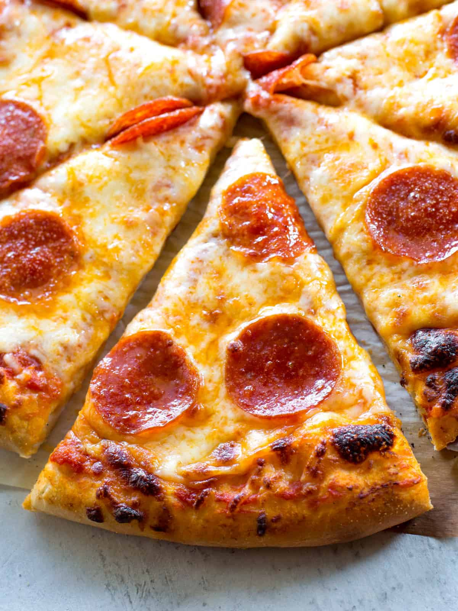

Pizza Recipe

Ingredients
- ½ cup water
- (12 ounce) can CONTADINA® Tomato Paste
-
- 1 teaspoon dried oregano, crushed
- 1 teaspoon dried basil, crushed
- teaspoon garlic powder
- teaspoon onion powder
- teaspoon sugar
- teaspoon salt
- teaspoon black pepper
How to make
- Preheat the oven to 425 degrees F (220 degrees C). Grease two 12-inch pizza pans.
- Make sauce
- Make crust
- Transfer dough to a floured surface; knead until dough is smooth and elastic, about 4 minutes.
- Divide dough in half. Lightly flour your hands, then pat each piece of dough onto the prepared pizza pans.
- Top dough with sauce, cheese, and pepperoni.
- Bake in the preheated oven until crusts are browned and cheese is bubbly, 18 to 20 minutes.
And you are done!